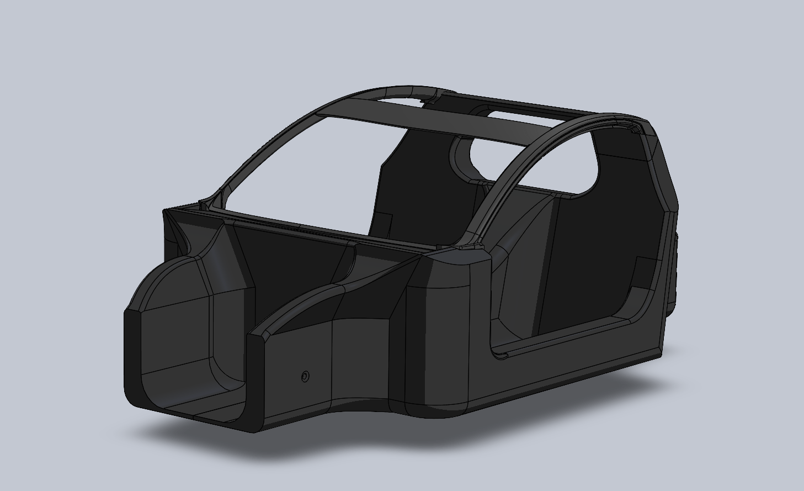
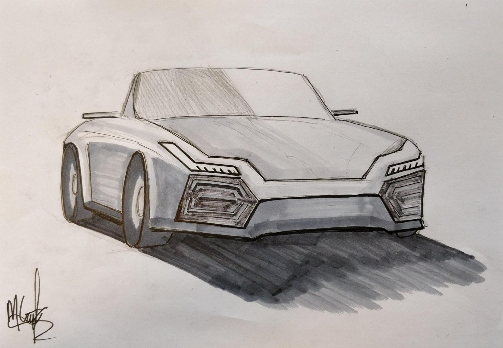
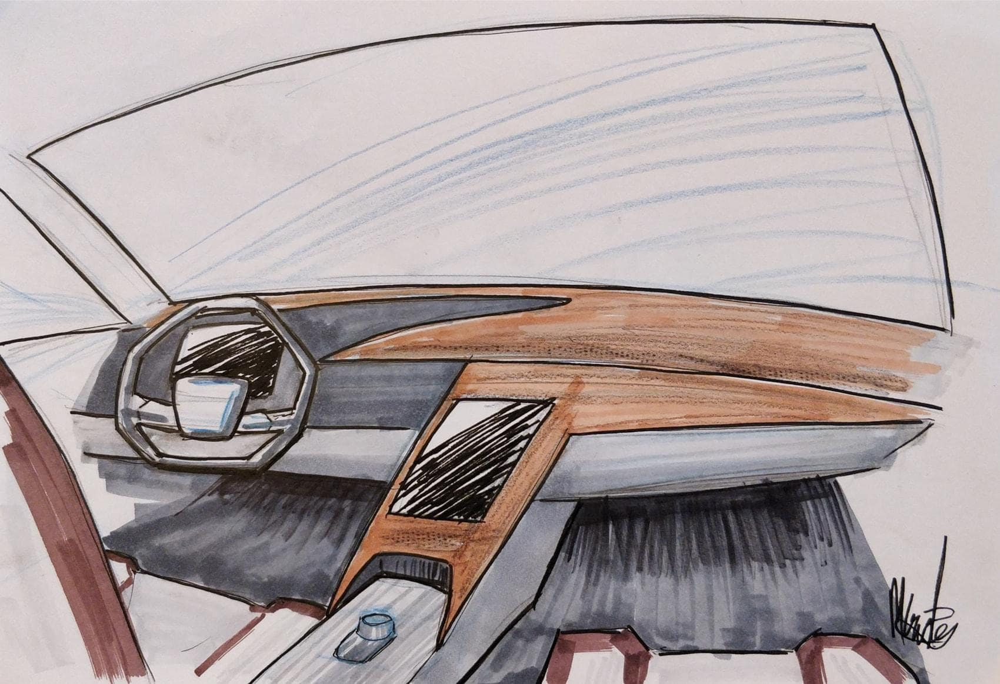
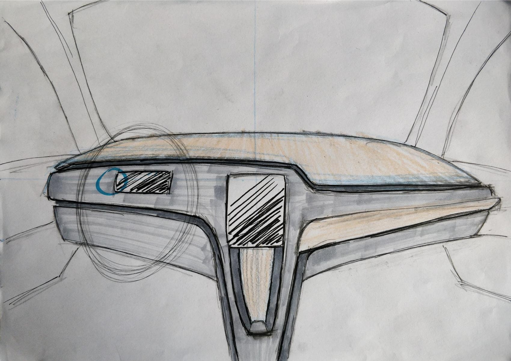
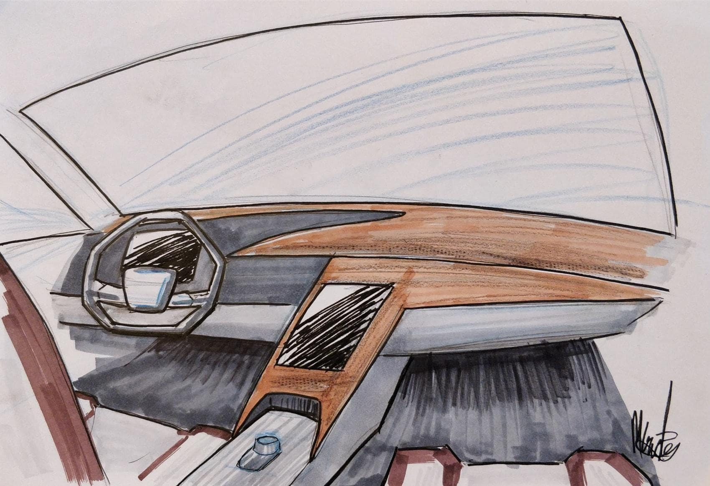
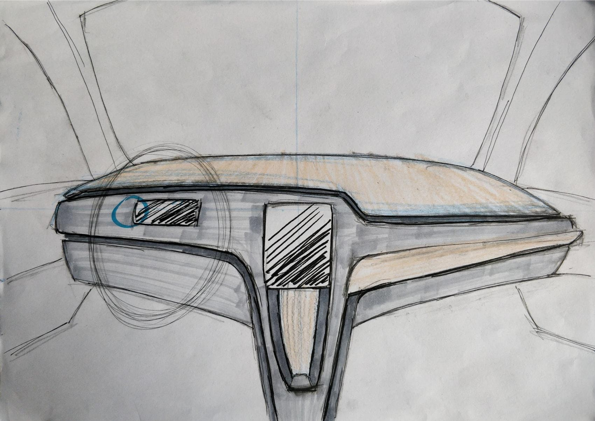

designing the monocoque chassis for TUecomotive along with the mechanical team of ecomotive showed me
another side of a project you would normally not be involved in as a designer.


As a design role I mainly focuss on the interior design of the car. Currently I am working on the design of the
inner door panel of the car and the door handle. Applying the experience in CAD modeling I gained by designing
the monocoque.

During my journey at TUecomotive I also gained a lot of experience int the area of exploratory sketching and
rendered drawing. First by ideating on the exterior of the car, mainly the front of the car. The early grill
design and the lighting shape. Later in the project my focus has been more on the interior design.

 



add an image with the styrodur modeling.
add picture about sketching other things added in report
add picture doorpanel